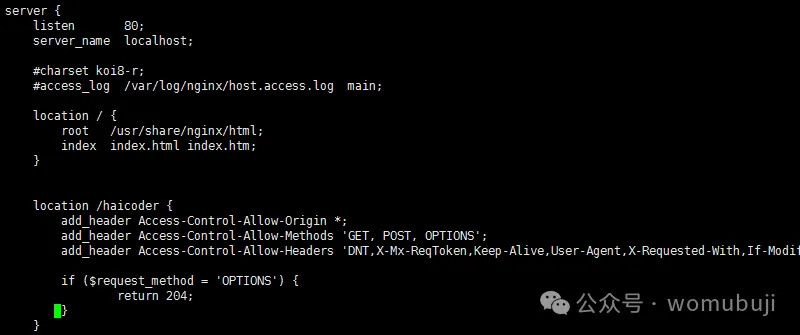

HaoTian · 2024-10-03 21:49:11
Nginx 跨域配置是处理不同源之间资源请求的重要机制，主要用于解决浏览器安全策略中的同源策略限制问题。以下是关于 Nginx 跨域配置的详细说明：
跨域资源共享（CORS，Cross-Origin Resource Sharing）是一种机制，它使用额外的 HTTP 头部来告诉浏览器让运行在一个 origin（域）上的 Web 应用被准许访问来自不同源服务器上的指定的资源。当一个资源从与该资源本身所在的服务器不同的域、协议或端口请求一个资源时，资源会发起一个跨域 HTTP 请求。
Nginx 的主配置文件通常位于/etc/nginx/nginx.conf，但也可能位于/usr/local/nginx/conf/nginx.conf或其他路径。你可能还需要编辑特定站点的配置文件，这些文件通常位于/etc/nginx/sites-available/目录下，并通过符号链接连接到/etc/nginx/sites-enabled/目录。
在 Nginx 配置文件中，找到或创建一个server块，该块定义了特定域名或 IP 的服务器配置。在server块内，你可以使用location指令来定义如何处理特定路径的请求。对于跨域请求，你可以在location块内添加add_header指令来设置 CORS 相关的 HTTP 头部。
http://example.com），或者使用*表示允许所有源。但是，当需要携带凭证（如 Cookies）时，必须指定具体的域名。GET、POST、PUT、DELETE、OPTIONS等。Content-Type、Authorization等。true，则允许跨域请求携带凭证（如 Cookies）。当设置此选项时，Access-Control-Allow-Origin不能设置为*，必须指定具体的域名。server {
listen 80;
server_name yourdomain.com;
location /api/ {
# 允许特定源跨域访问
add_header 'Access-Control-Allow-Origin' 'http://example.com';
add_header 'Access-Control-Allow-Methods' 'GET, POST, PUT, DELETE, OPTIONS';
add_header 'Access-Control-Allow-Headers' 'Content-Type, Authorization, X-Requested-With';
add_header 'Access-Control-Allow-Credentials' 'true';
# 对于OPTIONS预检请求，直接返回204
if ($request_method = 'OPTIONS') {
return 204;
}
# 其他配置...
}
}
或者，允许所有源跨域访问：
server {
listen 80;
server_name yourdomain.com;
location /api/ {
# 允许所有源跨域访问
add_header 'Access-Control-Allow-Origin' '*' always;
add_header 'Access-Control-Allow-Methods' 'GET, POST, PUT, DELETE, OPTIONS';
add_header 'Access-Control-Allow-Headers' 'Content-Type, Authorization, X-Requested-With';
add_header 'Access-Control-Allow-Credentials' 'true';
# 如果使用Nginx作为反向代理，请添加相应的proxy_pass配置
# proxy_pass http://backend-server:port/api/;
# 其他配置...
}
}
配置修改完成后，需要保存文件并重启 Nginx 服务以使更改生效。重启 Nginx 服务的命令通常是：
sudo systemctl restart nginx
或者，如果使用的是其他系统管理工具：
sudo service nginx restart
配置完成后，可以使用浏览器的开发者工具（如 Chrome 的开发者工具）来测试和验证跨域配置是否生效。观察网络请求和响应的 HTTP 头部，确认是否包含了正确的 CORS 头部信息。
以上便是使用 Nginx 配置跨域请求的详细步骤，包括代码示例及注释说明。根据实际情况选择合适的配置方式，并确保重启 Nginx 服务以应用配置。如有问题，应检查 Nginx 错误日志以排查故障。